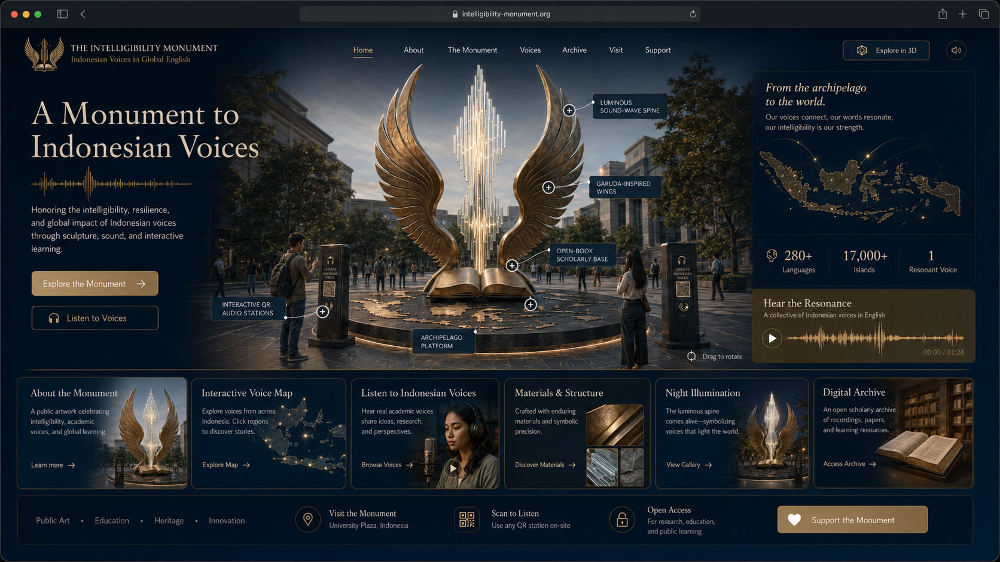
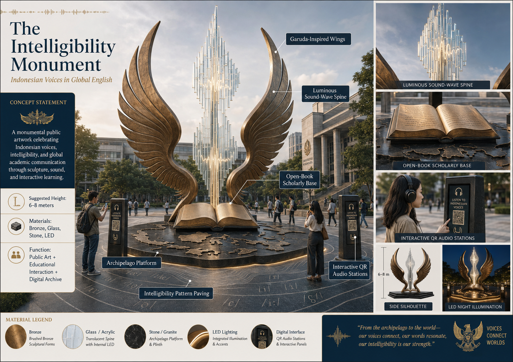

Integrated public art · voice archive · digital twin · QR exhibition system
A Monument to Indonesian Voices
A monumental public artwork celebrating Indonesian voices, intelligibility, and global academic communication through sculpture, sound, and interactive learning.

Clickable monument visual
Every Spot Works as a QR-Linked Button
Click the hotspot buttons directly on the design image. Each button opens its explanation, QR access, related materials, related voices, and archive function.

National voice representation
114 Voice Records from All Indonesian Provinces
The platform contains 3 voice records for every province: student, academic, and community. Replace the demo texts with real recordings when your field documentation is ready.
Interactive Indonesia voice map
Province-to-Voice Integration
Each province button opens its three voice records and a province QR. The map synchronizes with the archive and QR station.
Materials, meaning, and digital function
Integrated Monument Elements
Every design element has a material specification, symbolic meaning, digital action, QR route, and archive role.
On-site visitor access
QR Station Generator
Generate QR access for the whole platform, hotspot elements, provinces, individual voices, materials, and dossier pages.
Scan to open the digital platform.
International recognition dossier
Ready Documentation Package
The dossier uses the live app data: monument concept, hotspots, voices, materials, QR links, implementation plan, and dissemination strategy.
Owner control studio
Admin Studio
Manage identity, add real recordings, export/import data, reset to the 114-province voice framework, and prepare public documentation.